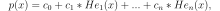

numpy.polynomial.hermite_e.hermefit¶
-
numpy.polynomial.hermite_e.hermefit(x, y, deg, rcond=None, full=False, w=None)[source]¶ Least squares fit of Hermite series to data.
Return the coefficients of a HermiteE series of degree deg that is the least squares fit to the data values y given at points x. If y is 1-D the returned coefficients will also be 1-D. If y is 2-D multiple fits are done, one for each column of y, and the resulting coefficients are stored in the corresponding columns of a 2-D return. The fitted polynomial(s) are in the form

where n is deg.
Parameters: x : array_like, shape (M,)
x-coordinates of the M sample points
(x[i], y[i]).y : array_like, shape (M,) or (M, K)
y-coordinates of the sample points. Several data sets of sample points sharing the same x-coordinates can be fitted at once by passing in a 2D-array that contains one dataset per column.
deg : int or 1-D array_like
Degree(s) of the fitting polynomials. If deg is a single integer all terms up to and including the deg‘th term are included in the fit. For NumPy versions >= 1.11.0 a list of integers specifying the degrees of the terms to include may be used instead.
rcond : float, optional
Relative condition number of the fit. Singular values smaller than this relative to the largest singular value will be ignored. The default value is len(x)*eps, where eps is the relative precision of the float type, about 2e-16 in most cases.
full : bool, optional
Switch determining nature of return value. When it is False (the default) just the coefficients are returned, when True diagnostic information from the singular value decomposition is also returned.
w : array_like, shape (M,), optional
Weights. If not None, the contribution of each point
(x[i],y[i])to the fit is weighted by w[i]. Ideally the weights are chosen so that the errors of the productsw[i]*y[i]all have the same variance. The default value is None.Returns: coef : ndarray, shape (M,) or (M, K)
Hermite coefficients ordered from low to high. If y was 2-D, the coefficients for the data in column k of y are in column k.
[residuals, rank, singular_values, rcond] : list
These values are only returned if full = True
resid – sum of squared residuals of the least squares fit rank – the numerical rank of the scaled Vandermonde matrix sv – singular values of the scaled Vandermonde matrix rcond – value of rcond.
For more details, see linalg.lstsq.
Warns: RankWarning
The rank of the coefficient matrix in the least-squares fit is deficient. The warning is only raised if full = False. The warnings can be turned off by
>>> import warnings >>> warnings.simplefilter('ignore', RankWarning)
See also
chebfit,legfit,polyfit,hermfit,polyfithermeval- Evaluates a Hermite series.
hermevander- pseudo Vandermonde matrix of Hermite series.
hermeweight- HermiteE weight function.
linalg.lstsq- Computes a least-squares fit from the matrix.
scipy.interpolate.UnivariateSpline- Computes spline fits.
Notes
The solution is the coefficients of the HermiteE series p that minimizes the sum of the weighted squared errors

where the
 are the weights. This problem is solved by
setting up the (typically) overdetermined matrix equation
are the weights. This problem is solved by
setting up the (typically) overdetermined matrix equation
where V is the pseudo Vandermonde matrix of x, the elements of c are the coefficients to be solved for, and the elements of y are the observed values. This equation is then solved using the singular value decomposition of V.
If some of the singular values of V are so small that they are neglected, then a RankWarning will be issued. This means that the coefficient values may be poorly determined. Using a lower order fit will usually get rid of the warning. The rcond parameter can also be set to a value smaller than its default, but the resulting fit may be spurious and have large contributions from roundoff error.
Fits using HermiteE series are probably most useful when the data can be approximated by
sqrt(w(x)) * p(x), where w(x) is the HermiteE weight. In that case the weightsqrt(w(x[i])should be used together with data valuesy[i]/sqrt(w(x[i]). The weight function is available ashermeweight.References
[R67] Wikipedia, “Curve fitting”, http://en.wikipedia.org/wiki/Curve_fitting Examples
>>> from numpy.polynomial.hermite_e import hermefit, hermeval >>> x = np.linspace(-10, 10) >>> err = np.random.randn(len(x))/10 >>> y = hermeval(x, [1, 2, 3]) + err >>> hermefit(x, y, 2) array([ 1.01690445, 1.99951418, 2.99948696])